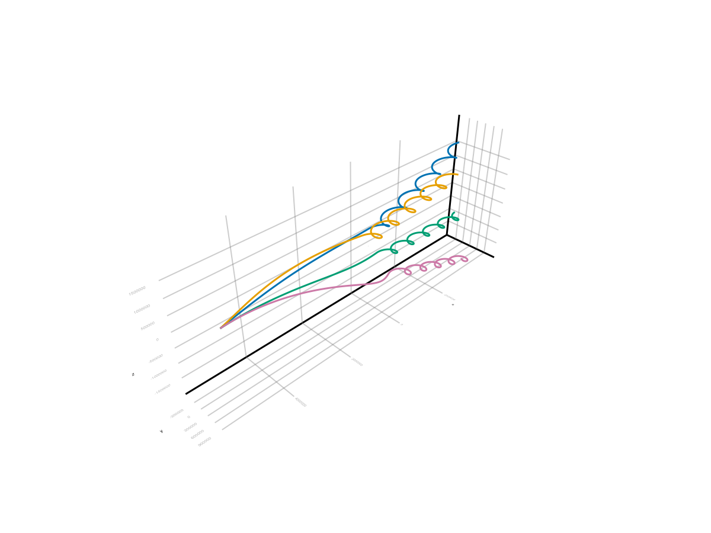
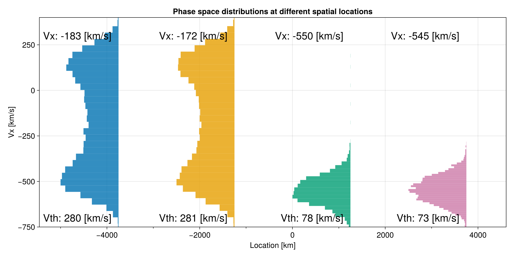
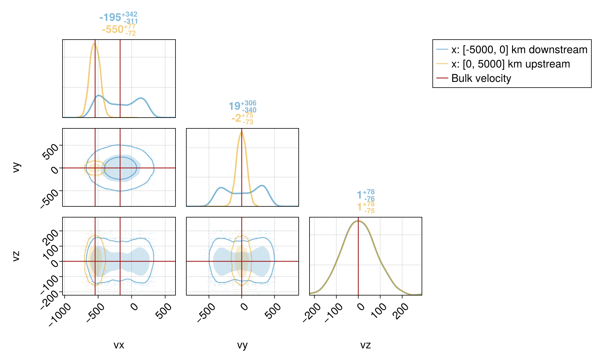
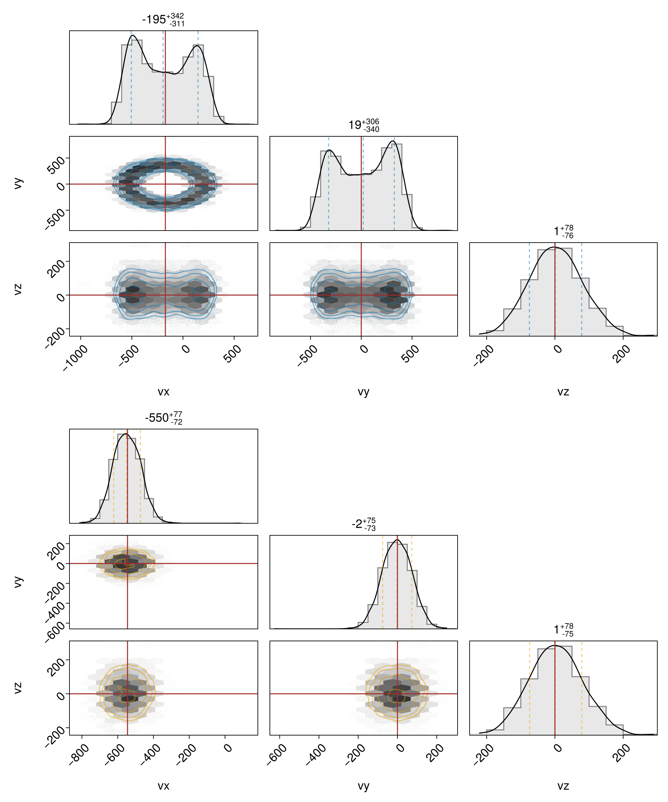
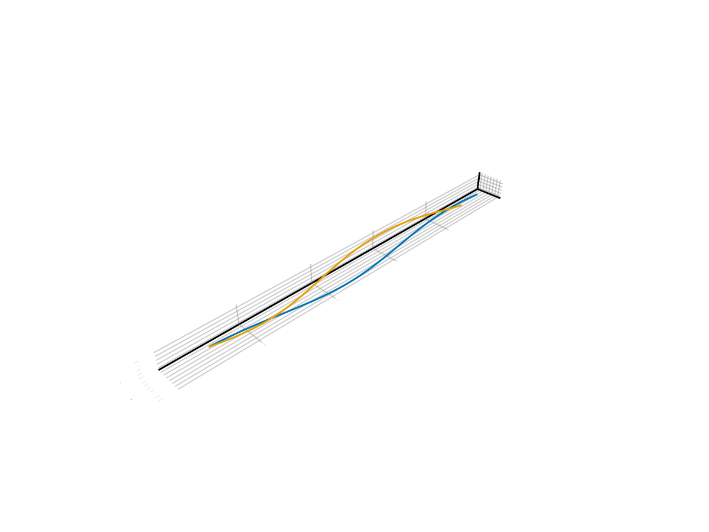

Shock


This example shows how to trace protons of a certain energy in MHD plane shocks.
using TestParticle, OrdinaryDiffEqVerner
using TestParticle: mᵢ, kB
using LinearAlgebra
using Statistics: mean, std
using Printf
using Random
using CairoMakie, PairPlots
# For reproducible results
Random.seed!(1234)
"Set initial conditions."
function prob_func(prob, i, repeat)
v₀ = sample(vdf₁)
r₀ = [5_000e3, 0.0, 0.0]
prob = remake(prob; u0 = [r₀..., v₀...])
end;Perpendicular shock is a special shock in which both the upstream and downstream plasma flows are perpendicular to the magnetic field, as well as the shock front.
# MHD states in SI units
n₁ = 1.0e6
T₁ = 720471.8506664868
Pi₁ = 0.0049735919716217296 * 1e-9
Pe₁ = 0.0049735919716217296 * 1e-9
Pth₁ = Pi₁ + Pe₁
V₁ = [-545.1484121835928, 0.0, 0.0] .* 1e3
B₁ = [0.0, 0.0, 5.0] .* 1e-9
n₂ = 3.1662479035540008e6
T₂ = 5.957947703036288e6
Pi₂ = 0.13022511153415584 * 1e-9
Pe₂ = 0.13022511153415584 * 1e-9
Pth₂ = Pi₂ + Pe₂
V₂ = [-172.17489874108816, 0.0, 0.0] .* 1e3
B₂ = [0.0, 0.0, 15.831239517770003] .* 1e-9;In ideal MHD, the electric field simply contains the convection term. For perpendicular shocks, the electric field across the shock is continuous. In the upstream, particles follow straight lines because it's purely an ExB drift; across the shock, ExB drift changes to the downstream bulk velocity.
E₁ = B₁ × V₁
E₂ = B₂ × V₂
# Shock normal direction range
x = range(-5_000e3, 5_000e3, length=100)
B = repeat(B₁, 1, length(x))
E = repeat(E₁, 1, length(x))
# Index for the shock location
mid_ = length(x) ÷ 2
B[:, 1:mid_] .= B₂
E[:, 1:mid_] .= E₂
const vdf₁ = Maxwellian(V₁, Pth₁, n₁; m=mᵢ)
vdf₂ = Maxwellian(V₂, Pth₂, n₂; m=mᵢ)
trajectories = 400
weight₁ = n₁ / trajectories # relation between test particle and real particles
prob = let
# BC type 3 is Flat
param = prepare(x, E, B; species=Proton, bc=3);
stateinit = zeros(6) # particle position and velocity to be modified
tspan = (0.0, 30.0)
ODEProblem(trace!, stateinit, tspan, param)
end
ensemble_prob = EnsembleProblem(prob; prob_func, safetycopy=false)
sols = solve(ensemble_prob, Vern9(), EnsembleSerial(); trajectories);Sample particle trajectories
function plot_traj(sols; azimuth=1.275pi, elevation=pi/8,
limits=((-4000.0, 4000.0), (-1000., 1000.), (-2000., 2000.)))
f = Figure(fontsize=18)
##ax = Axis3(f[1, 1];
# title="Particles across MHD shock",
# xlabel="x [km]",
# ylabel="y [km]",
# zlabel="z [km]",
# aspect=:data,
# limits, azimuth, elevation,
##)
ax = LScene(f[1, 1], show_axis=true)
for i in eachindex(sols)
lines!(ax, sols[i], idxs=(1,2,3), label="$i",
color=Makie.wong_colors()[mod(i-1, 7)+1])
end
invL = 1 / 1e3
# In Makie 0.21.11, scene scaling has issues on Axis3.
##scale!(ax.scene, invL, invL, invL)
# Represent the shock front
p1 = Point3f(0.0, -2e2, -2e2)
p2 = Point3f(0.0, 2e2, -2e2)
p3 = Point3f(0.0, 2e2, 2e2)
p4 = Point3f(0.0, -2e2, 2e2)
mesh!(ax, [p1, p2, p3], color = (:gray, 0.1), shading = Makie.automatic)
mesh!(ax, [p1, p4, p3], color = (:gray, 0.1), shading = Makie.automatic)
f
end
f = plot_traj(sols[1:4])
Phase space distributions
function plot_dist(x, sols; nxchunks::Int=2, ntchunks::Int=20)
trange = range(sols[1].prob.tspan..., length=ntchunks)
xrange = range(x[1], x[end], length=nxchunks+1)
dx = (x[end] - x[1]) / nxchunks
xmid = range(x[1] + 0.5dx, x[end] - 0.5dx, length=nxchunks) ./ 1e3
vx = [Float64[] for _ in 1:nxchunks]
for sol in sols
for t in trange
xv = sol(t)
for i in 1:nxchunks
if xrange[i] < xv[1] ≤ xrange[i+1]
push!(vx[i], xv[4] / 1e3)
end
end
end
end
for i in eachindex(vx)
if isempty(vx[i])
push!(vx[i], 0.0)
end
end
f = Figure(size = (1200, 600), fontsize=18)
ax = Axis(f[1, 1],
limits = (nothing, nothing, -750, 400),
title = "Phase space distributions at different spatial locations",
xlabel = "Location [km]",
ylabel = "Vx [km/s]",
xminorticksvisible = true)
for i in 1:nxchunks
hist!(ax, vx[i], normalization = :pdf, bins = 50,
scale_to=-5000/nxchunks, offset=xmid[i], direction=:x)
end
v̄x = mean.(vx)
vth = [std(vx[i]; corrected=false, mean=v̄x[i]) for i in 1:nxchunks]
means_str = [@sprintf "Vx: %d [km/s]" v̄x[i] for i in eachindex(v̄x)]
std_str = [@sprintf "Vth: %d [km/s]" vth[i] for i in eachindex(vth)]
text!(Point.(xmid.+400, 300.0), text = means_str, align = (:right, :center),
offset = (-60, 0), color = :black, fontsize=24)
text!(Point.(xmid.+400, -700.0), text = std_str, align = (:right, :center),
offset = (-60, 0), color = :black, fontsize=24)
f
end
f = plot_dist(x, sols; nxchunks=4, ntchunks=100)
Even with 400 particles, we are still able to statistically approximate the velocity moment downstream of the perpendicular shock. While the upstream thermal speed is close to what we set, the downstream thermal speed is higher than our set value:
Vth₁ = 77.1 km/s
Vth₂ = 221.7 km/s
A nice way to present the 3d distributions in 2d is via the pair plots:
function collect_VDF(x, sols; ntchunks::Int=20)
nxchunks = 2
trange = range(sols[1].prob.tspan..., length=ntchunks)
xrange = range(x[1], x[end], length=nxchunks+1)
table = [(;
vx = Float64[],
vy = Float64[],
vz = Float64[],
) for _ in 1:nxchunks]
for sol in sols
for t in trange
xv = sol(t)
for i in 1:nxchunks
if xrange[i] < xv[1] ≤ xrange[i+1]
push!(table[i].vx, xv[4] / 1e3)
push!(table[i].vy, xv[5] / 1e3)
push!(table[i].vz, xv[6] / 1e3)
end
end
end
end
for i in eachindex(table)
if isempty(table[i].vx)
push!(table[i].vx, 0.0)
push!(table[i].vy, 0.0)
push!(table[i].vz, 0.0)
end
end
xrange, table
end
function plot_dist_pairplots(x, sols; ntchunks::Int=20)
xrange, table = collect_VDF(x, sols; ntchunks)
f = Figure(size = (1000, 600), fontsize=18)
c1 = Makie.wong_colors(0.5)[1]
c2 = Makie.wong_colors(0.5)[2]
l1 = @sprintf "x: [%d, %d] km downstream" xrange[1]/1e3 xrange[2]/1e3
l2 = @sprintf "x: [%d, %d] km upstream" xrange[2]/1e3 xrange[3]/1e3
pairplot(f[1,1],
PairPlots.Series(table[1], label=l1, color=c1),
PairPlots.Series(table[2], label=l2, color=c2),
PairPlots.Truth(
(;
vx = [-545.1484121835928, -172.1748987410881],
vy = 0,
vz = 0,
),
label="Bulk velocity",
color = :brown,
),
bodyaxis=(; xgridvisible=true, ygridvisible=true),
diagaxis=(; xgridvisible=true, ygridvisible=true)
)
f
end
function plot_dist_pairplot(x, sols; ntchunks::Int=20)
xrange, table = collect_VDF(x, sols; ntchunks)
f = Figure(size = (1000, 1200), fontsize=18)
c1 = Makie.wong_colors(0.5)[1]
c2 = Makie.wong_colors(0.5)[2]
pairplot(f[1,1],
PairPlots.Series(table[1], color=c1),
PairPlots.Truth(
(;
vx = -172.1748987410881,
vy = 0,
vz = 0
),
color = :brown,
)
)
pairplot(f[2,1],
PairPlots.Series(table[2], color=c2),
PairPlots.Truth(
(;
vx = -545.1484121835928,
vy = 0,
vz = 0
),
color = :brown,
)
)
f
end
f = plot_dist_pairplots(x, sols; ntchunks=20)
Downstream and upstream distributions showing separately:
f = plot_dist_pairplot(x, sols; ntchunks=20)
We see that the upstream thermal speed is about what we set in all three dimensions, whereas the downstream thermal speed in the perpendicular plane is larger than the downstream isotropic thermal speed, and that in the parallel z direction is the same as the upstream thermal speed. This simply indicates that there is no heating across the shock in the parallel direction and more heating in the perpendicular directions, which in turn creates anisotropy $T_\perp / T_\parallel > 1$. Due to the lack of wave-particle interactions, there is no way to isotropize the test particle distributions in the downstream.
For parallel shocks, we have a different scenario. Parallel shock is another special shock in which both the upstream and downstream plasma flows are parallel to the magnetic field, as well as perpendicular to the shock front.
# MHD states in SI units
n₁ = 1.0e6
T₁ = 720471.8506664868
Pi₁ = 0.0049735919716217296 * 1e-9
Pe₁ = 0.0049735919716217296 * 1e-9
Pth₁ = Pi₁ + Pe₁
V₁ = [-545.1484121835928, 0.0, 0.0] .* 1e3
B₁ = [5.0, 0.0, 0.0] .* 1e-9
n₂ = 3.6363636363636362e6
T₂ = 7.380333520264822e6
Pi₂ = 0.18526630094290936 * 1e-9
Pe₂ = 0.18526630094290936 * 1e-9
Pth₂ = Pi₂ + Pe₂
V₂ = [-149.91581335048804, 0.0, 0.0] .* 1e3
B₂ = [5.0, 0.0, 0.0] .* 1e-9;There is no convection electric field in the parallel shock:
E₁ = B₁ × V₁
E₂ = B₂ × V₂3-element Vector{Float64}:
0.0
-0.0
0.0Therefore, when we trace particles, there is no deceleration across the shock:
# Shock normal direction range
x = range(-5_000e3, 5_000e3, length=100)
B = repeat(B₁, 1, length(x))
E = repeat(E₁, 1, length(x))
# Index for the shock location
mid_ = length(x) ÷ 2
B[:, 1:mid_] .= B₂
E[:, 1:mid_] .= E₂
vdf₁ = Maxwellian(V₁, Pth₁, n₁; m=mᵢ)
vdf₂ = Maxwellian(V₂, Pth₂, n₂; m=mᵢ)
trajectories = 2
weight₁ = n₁ / trajectories
prob = let
# BC type 3 is Flat
param = prepare(x, E, B; species=Proton, bc=3);
stateinit = zeros(6) # particle position and velocity to be modified
tspan = (0.0, 14.0)
ODEProblem(trace!, stateinit, tspan, param)
end
ensemble_prob = EnsembleProblem(prob; prob_func, safetycopy=false)
sols = solve(ensemble_prob, Vern9(), EnsembleSerial(); trajectories);
f = plot_traj(sols; azimuth=1.08π, elevation=pi/16)
Clearly, test particle tracing in MHD parallel shocks fails to recover physics. MHD parallel shocks are essentially hydrodynamic shocks where magnetic field plays no role. Due to the lack of collision and other diffusion processes, we are unable to capture the correct microscopic scenario here.
This page was generated using DemoCards.jl and Literate.jl.